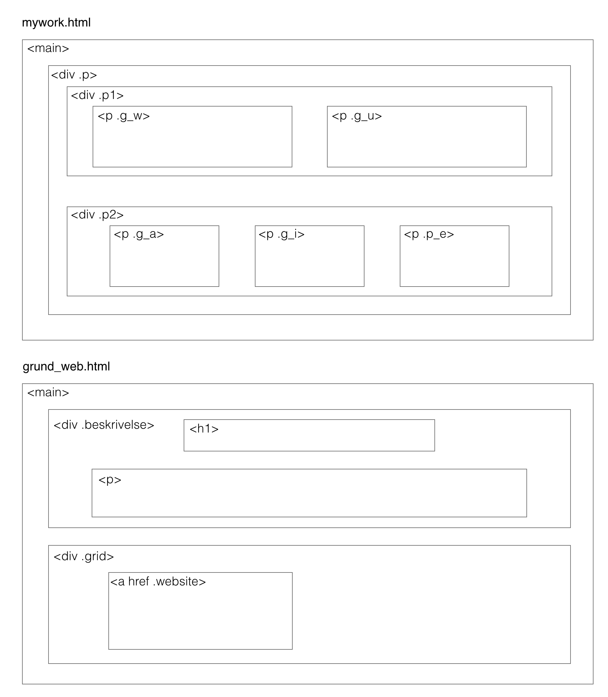

PORTFOLIO
EKSAMEN
SITEMAP
For at planlægge strukturen for mit portfolio-site, lavede jeg først et sitemap. Sitemappet har hjulpet mig til at holde overblik over mine sider og dertilhørende undersider.
Jeg ønskede at bygge sitet op på en måde, så det ville være overskueligt at finde rundt blandt de forskellige temaopgaver. Derfor har jeg lavet en forside, der kan navigere på til min "Om mig"-side og til en oversigt over min portfolio. På min portfolio-side, får man et overblik over semesterets temaer. Her er det muligt, at vælge det ønskede tema, og derefter bliver man ført til en oversigt over de opgaver vi har haft på det gældende tema. Her kan man så vælge den opgave, man ønsker at læse om.
LAYOUTDIAGRAM
Dernæst skulle jeg beslutte mig for hvordan layoutet af mine sider skulle se ud. Jeg lavede derfor et layoutdiagram for portfolio-siden (mywork.html), tema-siderne (grund_web.html) og for en af dokumenationssiderne (spil.html). Layoutet varierer en anelse på de forskellige dokumenationssider, men tager udgangspunkt i det samme diagram som for spil.html.
For at gøre opsætningen af mine html-elementer på mine sider mere ensartet, lavede jeg classerne grid_1, grid_2 og grid_3 som går igen på de fleste af siderne.
XD-PROTOTYPE
Efter jeg havde fået et overblik over struktur og layout, gik jeg igang med at designe et par mock-up's i Adobe XD.
Jeg ville have et simpelt design i en digital modernistisk stil, så fokus ville være på at få præsenteret opgaverne på en overskuelig måde. Mit design tager bl.a. udgangspunkt i gestalt lovene, så oplevelsen af mit site ikke virker rodet eller forvirrende.
Mit site er designet primært i sort og hvid med undtagelse af den blå hover-effekt på links. Det har jeg valgt, så det primære forkus ville være på billeder, illustrationer/diagrammer og tekst, uden farverige elementer, der muligvis ville virke forstyrrende.
MEDIA QUERIES
Efter jeg har kodet mit site, har jeg gjort brug af media queries i CSS, for at gøre mit site responsivt.